Proslava ob dnevu Rudolfa Maistra
23. novembra 2022, smo člani Društva general Rudolf Maister Kranj, predstavniki dijakov in učiteljev s kranjske Gimnazije in vabljeni, ki so se odzvali na naše vabilo, na Maistrovem trgu v Kranju obeležili državni praznik – dan Rudolfa Maistra.
Društvo general Rudolf Maister Kranj je v sodelovanju z Mestno občino Kranj in z Gimnazijo Kranj po letu 2019 ponovno pripravilo slovesnost ob tem državnem prazniku. Župan Matjaž Rakovec in podpredsednik društva dr. Iztok Purič sta najprej na Maistrov spomenik na hiši, kjer je živel s starši in z bratoma, položila lovorov venec. Navzoče je potem pozdravil in tudi na kratko nagovoril župan Matjaž Rakovec.
Slavnostni govornik je bil predsednik društva Roman Nahtigal, ki je v govoru predstavil uspehe in sposobnosti generala Maistra, ki ni bil le vojaški poveljnik, ampak tudi pesnik, slikar, ljubitelj knjig in organizator kulturnega življenja. Poudaril je, da se moramo ob dnevu Rudolfa Maistra spomniti in pokloniti tudi vsem častnikom in vojakom, ki so se kot prostovoljci borili in dali življenje v bojih za severno mejo. Posebej je na koncu govora izpostavil majorja Alfreda Lavriča, ki ga je vlada SHS imenovala za vrhovnega poveljnika pri obrambi slovenske meje na zahodni Koroški, prostovoljce pa je po Gorenjski za to nalogo moral zbirati sam. Spomnil je tudi na poročnika Lojzeta Udeta st., ki je v Tržiču prostovoljce zbral že 14. 11. 1918 in jih popeljal na prelaz Ljubelj za pregon avstrijskih vojakov, ki so ga zasedli. Potem se je pridružil majorju Alfredu Lavriču in sodeloval v vseh bojih za slovensko Koroško. Celo svoje življenje je kasneje kot znanstvenik posvetil koroškemu vprašanju in preučevanju zgodovine bojev za severno mejo. Na koncu govora je zaključil, da so borci za severno mejo odšli brez slave in spomina, živijo naj pa v naši samostojni in suvereni Sloveniji.
Dijaki Gimnazije Kranj so po končanem slavnostnem govoru predstavili kulturni program s tremi recitacijami in z dvema harmonikarskima skladbama.
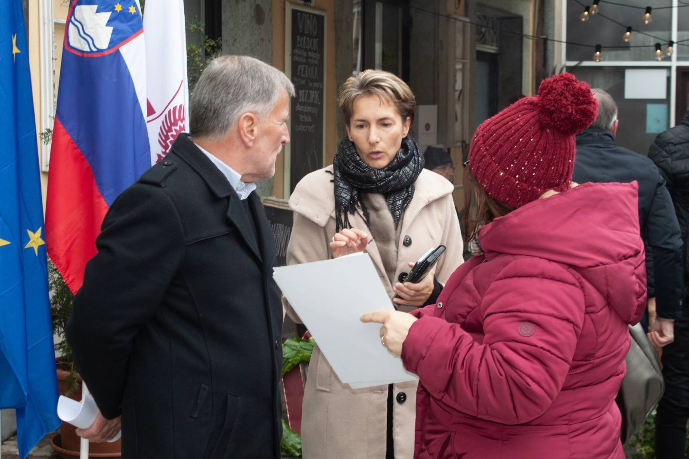
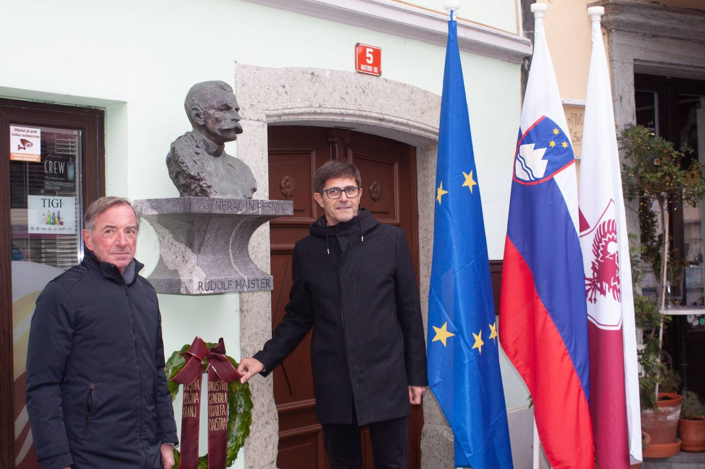
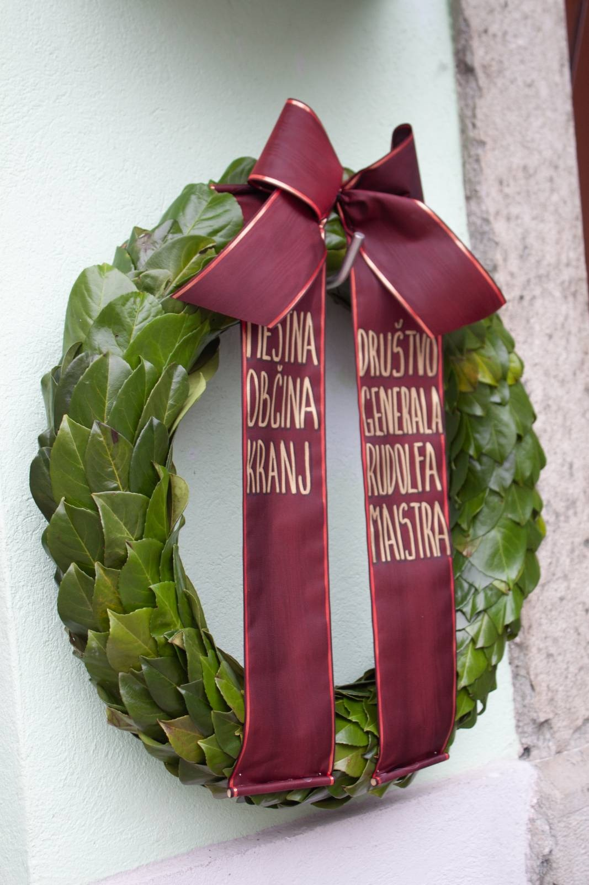
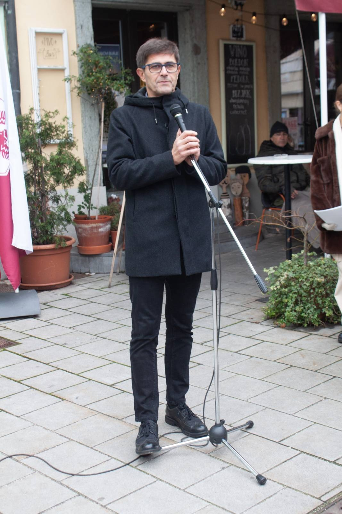
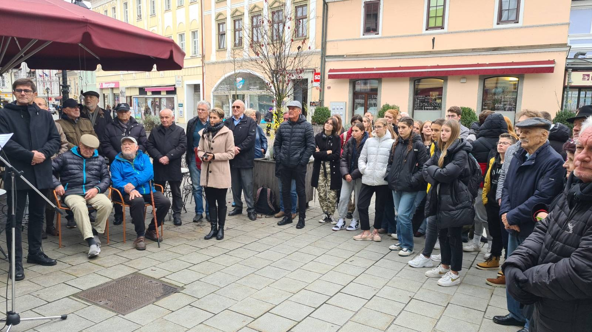
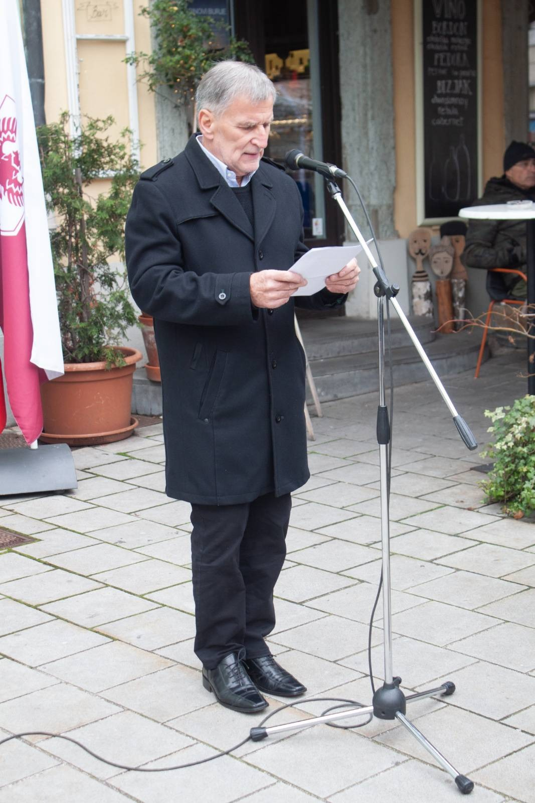
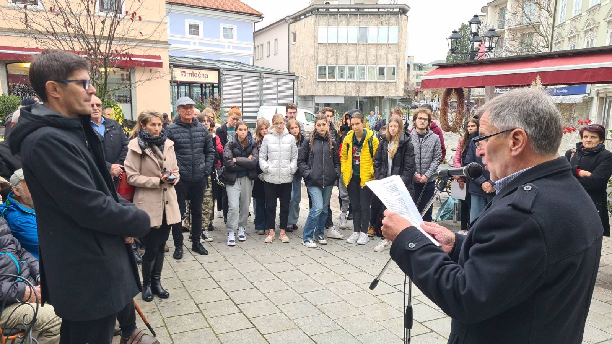
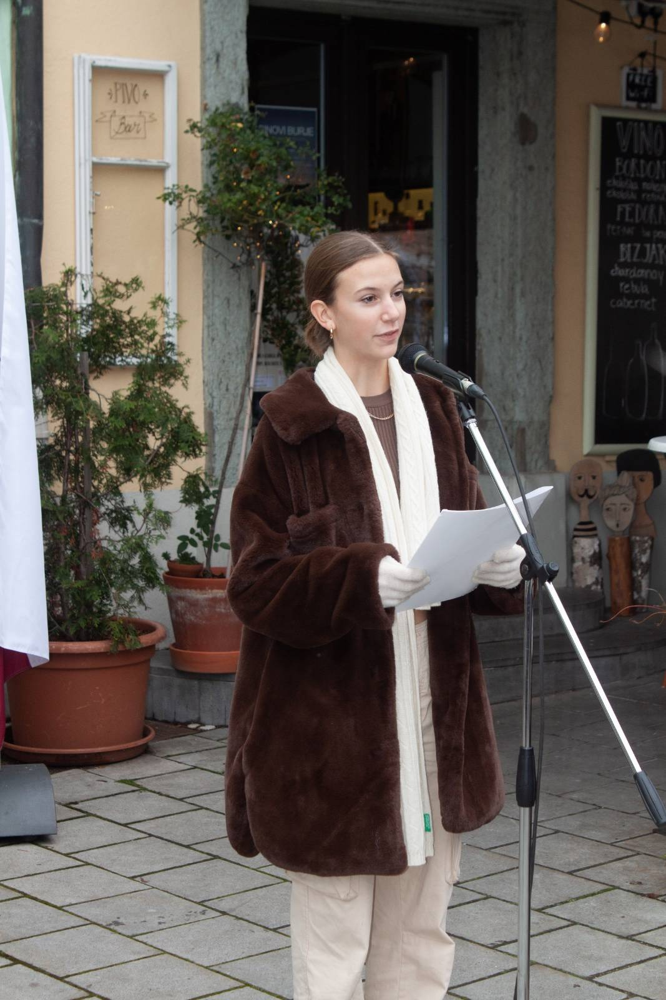
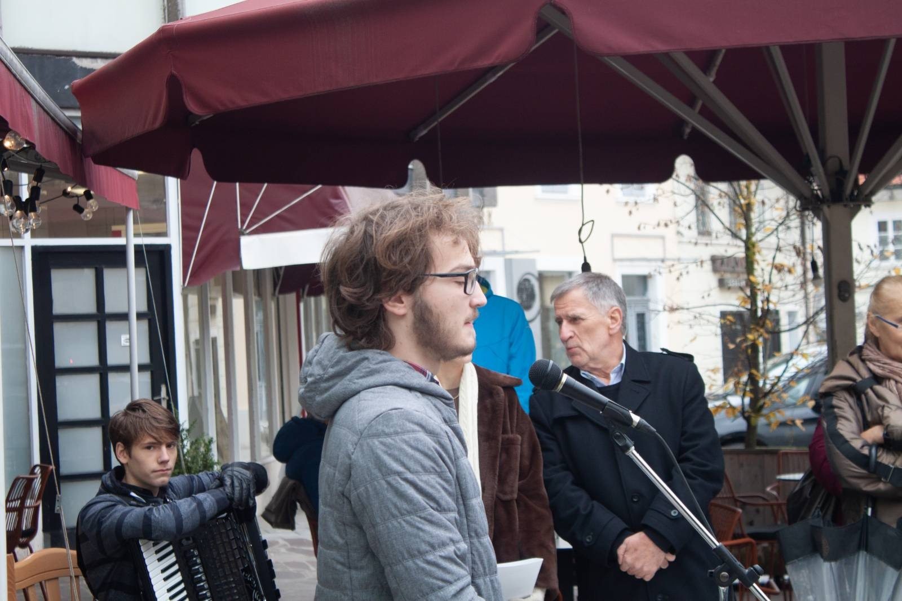
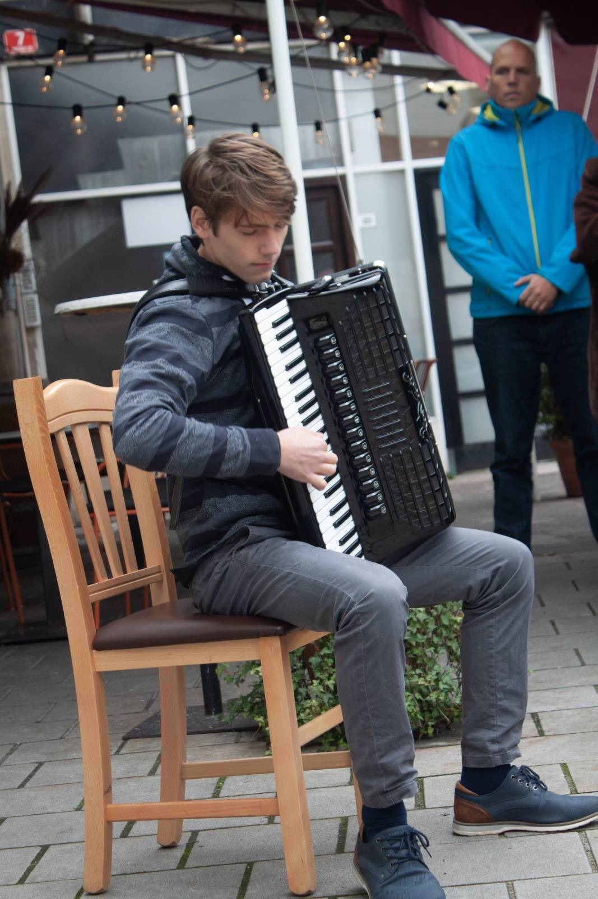
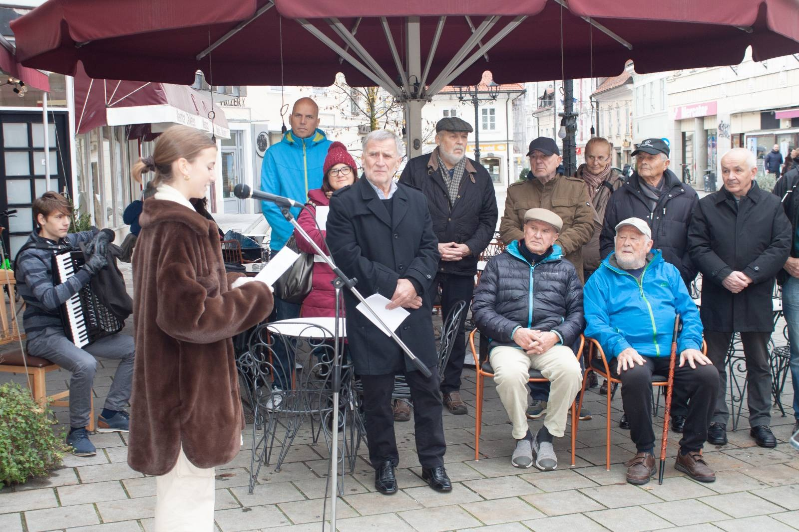
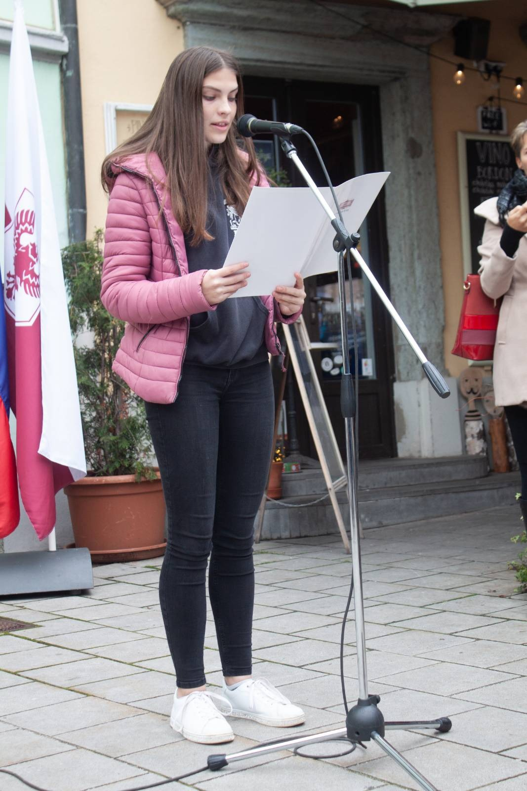
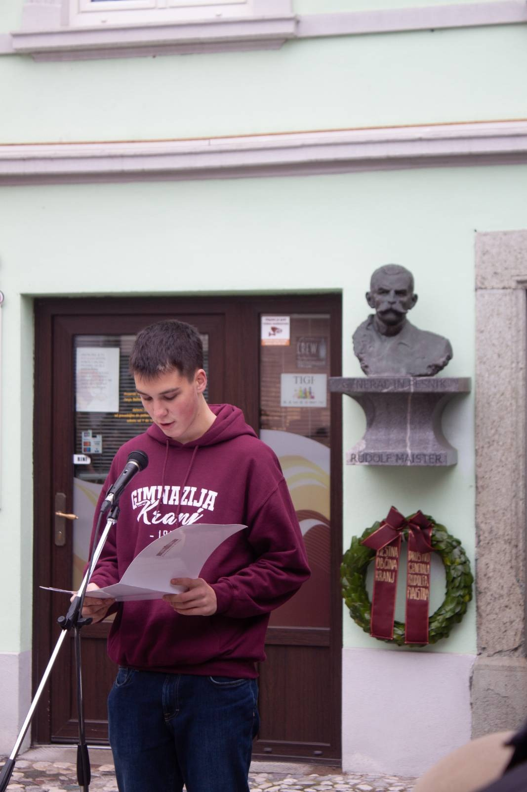
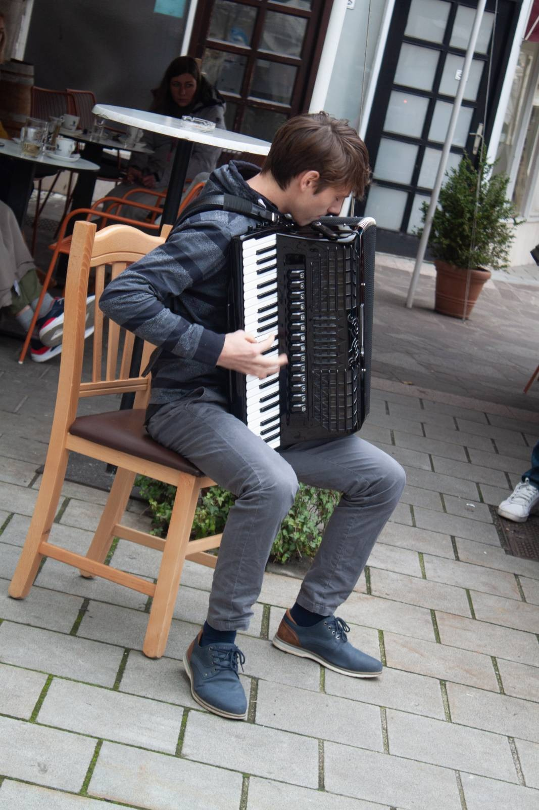
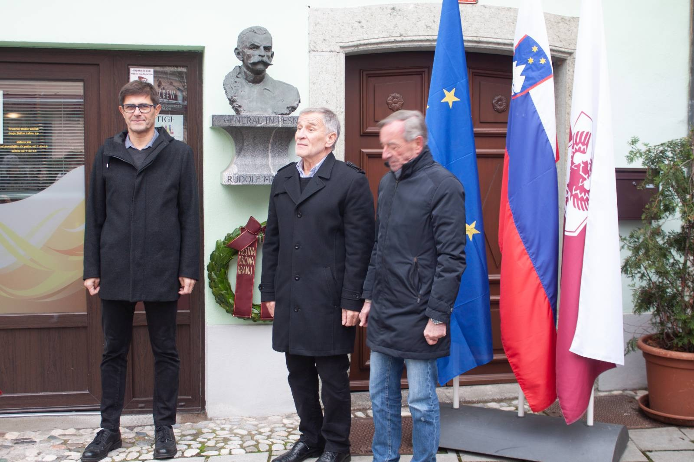